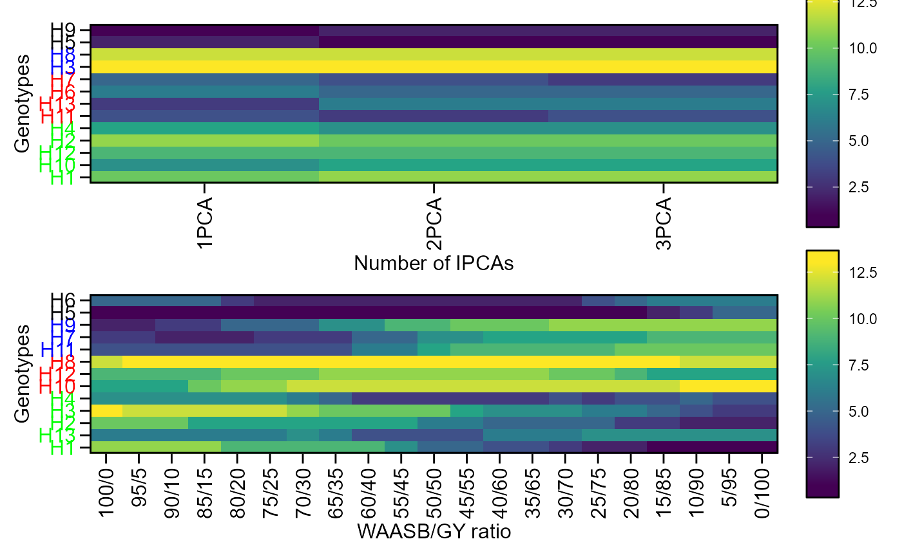

Plot heat maps with genotype ranking in two ways.
Usage
# S3 method for class 'wsmp'
plot(x, var = 1, type = 1, y.lab = NULL, x.lab = NULL, size.lab = 12, ...)Arguments
- x
An object returned by the function
wsmp.- var
The variable to plot. Defaults to
var = 1the first variable ofx.- type
1 = Heat map Ranks: this graphic shows the genotype ranking considering the WAASB index estimated with different numbers of Principal Components;2 = Heat map WAASY-GY ratio: this graphic shows the genotype ranking considering the different combinations in the WAASB/GY ratio.- y.lab
The label of y axis. Default is 'Genotypes'.
- x.lab
The label of x axis. Default is 'Number of axes'.
- size.lab
The size of the labels.
- ...
Currently not used.
Details
The first type of heatmap shows the genotype ranking depending on the number of principal component axis used for estimating the WAASB index. The second type of heatmap shows the genotype ranking depending on the WAASB/GY ratio. The ranks obtained with a ratio of 100/0 considers exclusively the stability for the genotype ranking. On the other hand, a ratio of 0/100 considers exclusively the productivity for the genotype ranking. Four clusters of genotypes are shown by label colors (red) unproductive and unstable genotypes; (blue) productive, but unstable genotypes; (black) stable, but unproductive genotypes; and (green), productive and stable genotypes.
Author
Tiago Olivoto tiagoolivoto@gmail.com
Examples
# \donttest{
library(metan)
model <- waasb(data_ge2,
env = ENV,
gen = GEN,
rep = REP,
resp = PH) %>%
wsmp()
#> Evaluating trait PH |============================================| 100% 00:00:00
#> Method: REML/BLUP
#> Random effects: GEN, GEN:ENV
#> Fixed effects: ENV, REP(ENV)
#> Denominador DF: Satterthwaite's method
#> ---------------------------------------------------------------------------
#> P-values for Likelihood Ratio Test of the analyzed traits
#> ---------------------------------------------------------------------------
#> model PH
#> COMPLETE NA
#> GEN 9.39e-01
#> GEN:ENV 1.09e-13
#> ---------------------------------------------------------------------------
#> All variables with significant (p < 0.05) genotype-vs-environment interaction
#> Ranks considering 0 for Y and 100 for WAASB | | 2% 00:00:00
Ranks considering 0 for Y and 100 for WAASB |= | 3% 00:00:00
Ranks considering 0 for Y and 100 for WAASB |= | 5% 00:00:00
Ranks considering 5 for Y and 95 for WAASB |= | 6% 00:00:00
Ranks considering 5 for Y and 95 for WAASB |== | 8% 00:00:00
Ranks considering 5 for Y and 95 for WAASB |== | 10% 00:00:00
Ranks considering 10 for Y and 90 for WAASB |== | 11% 00:00:00
Ranks considering 10 for Y and 90 for WAASB |=== | 13% 00:00:00
Ranks considering 10 for Y and 90 for WAASB |=== | 14% 00:00:00
Ranks considering 15 for Y and 85 for WAASB |=== | 16% 00:00:00
Ranks considering 15 for Y and 85 for WAASB |=== | 17% 00:00:00
Ranks considering 15 for Y and 85 for WAASB |==== | 19% 00:00:00
Ranks considering 20 for Y and 80 for WAASB |==== | 21% 00:00:00
Ranks considering 20 for Y and 80 for WAASB |==== | 22% 00:00:00
Ranks considering 20 for Y and 80 for WAASB |===== | 24% 00:00:00
Ranks considering 25 for Y and 75 for WAASB |===== | 25% 00:00:00
Ranks considering 25 for Y and 75 for WAASB |===== | 27% 00:00:00
Ranks considering 25 for Y and 75 for WAASB |====== | 29% 00:00:00
Ranks considering 30 for Y and 70 for WAASB |====== | 30% 00:00:00
Ranks considering 30 for Y and 70 for WAASB |====== | 32% 00:00:00
Ranks considering 30 for Y and 70 for WAASB |======= | 33% 00:00:00
Ranks considering 35 for Y and 65 for WAASB |======= | 35% 00:00:00
Ranks considering 35 for Y and 65 for WAASB |======= | 37% 00:00:00
Ranks considering 35 for Y and 65 for WAASB |======== | 38% 00:00:00
Ranks considering 40 for Y and 60 for WAASB |======== | 40% 00:00:00
Ranks considering 40 for Y and 60 for WAASB |======== | 41% 00:00:00
Ranks considering 40 for Y and 60 for WAASB |========= | 43% 00:00:00
Ranks considering 45 for Y and 55 for WAASB |========= | 44% 00:00:00
Ranks considering 45 for Y and 55 for WAASB |========= | 46% 00:00:00
Ranks considering 45 for Y and 55 for WAASB |========== | 48% 00:00:00
Ranks considering 50 for Y and 50 for WAASB |========== | 49% 00:00:00
Ranks considering 50 for Y and 50 for WAASB |========== | 51% 00:00:00
Ranks considering 50 for Y and 50 for WAASB |========== | 52% 00:00:00
Ranks considering 55 for Y and 45 for WAASB |=========== | 54% 00:00:00
Ranks considering 55 for Y and 45 for WAASB |=========== | 56% 00:00:00
Ranks considering 55 for Y and 45 for WAASB |=========== | 57% 00:00:00
Ranks considering 60 for Y and 40 for WAASB |============ | 59% 00:00:00
Ranks considering 60 for Y and 40 for WAASB |============ | 60% 00:00:00
Ranks considering 60 for Y and 40 for WAASB |============ | 62% 00:00:00
Ranks considering 65 for Y and 35 for WAASB |============= | 63% 00:00:00
Ranks considering 65 for Y and 35 for WAASB |============= | 65% 00:00:00
Ranks considering 65 for Y and 35 for WAASB |============= | 67% 00:00:00
Ranks considering 70 for Y and 30 for WAASB |============== | 68% 00:00:00
Ranks considering 70 for Y and 30 for WAASB |============== | 70% 00:00:00
Ranks considering 70 for Y and 30 for WAASB |============== | 71% 00:00:00
Ranks considering 75 for Y and 25 for WAASB |=============== | 73% 00:00:00
Ranks considering 75 for Y and 25 for WAASB |=============== | 75% 00:00:00
Ranks considering 75 for Y and 25 for WAASB |=============== | 76% 00:00:00
Ranks considering 80 for Y and 20 for WAASB |================ | 78% 00:00:00
Ranks considering 80 for Y and 20 for WAASB |================ | 79% 00:00:00
Ranks considering 80 for Y and 20 for WAASB |================ | 81% 00:00:00
Ranks considering 85 for Y and 15 for WAASB |================= | 83% 00:00:00
Ranks considering 85 for Y and 15 for WAASB |================= | 84% 00:00:00
Ranks considering 85 for Y and 15 for WAASB |================= | 86% 00:00:00
Ranks considering 90 for Y and 10 for WAASB |================= | 87% 00:00:00
Ranks considering 90 for Y and 10 for WAASB |================== | 89% 00:00:00
Ranks considering 90 for Y and 10 for WAASB |================== | 90% 00:00:00
Ranks considering 95 for Y and 5 for WAASB |=================== | 92% 00:00:00
Ranks considering 95 for Y and 5 for WAASB |==================== | 94% 00:00:00
Ranks considering 95 for Y and 5 for WAASB |==================== | 95% 00:00:00
Ranks considering 100 for Y and 0 for WAASB |=================== | 97% 00:00:00
Ranks considering 100 for Y and 0 for WAASB |====================| 98% 00:00:00
Ranks considering 100 for Y and 0 for WAASB |====================| 100% 00:00:00
p1 <- plot(model)
#> Warning: Vectorized input to `element_text()` is not officially supported.
#> ℹ Results may be unexpected or may change in future versions of ggplot2.
p2 <- plot(model, type = 2)
#> Warning: Vectorized input to `element_text()` is not officially supported.
#> ℹ Results may be unexpected or may change in future versions of ggplot2.
arrange_ggplot(p1, p2, ncol = 1)

# }